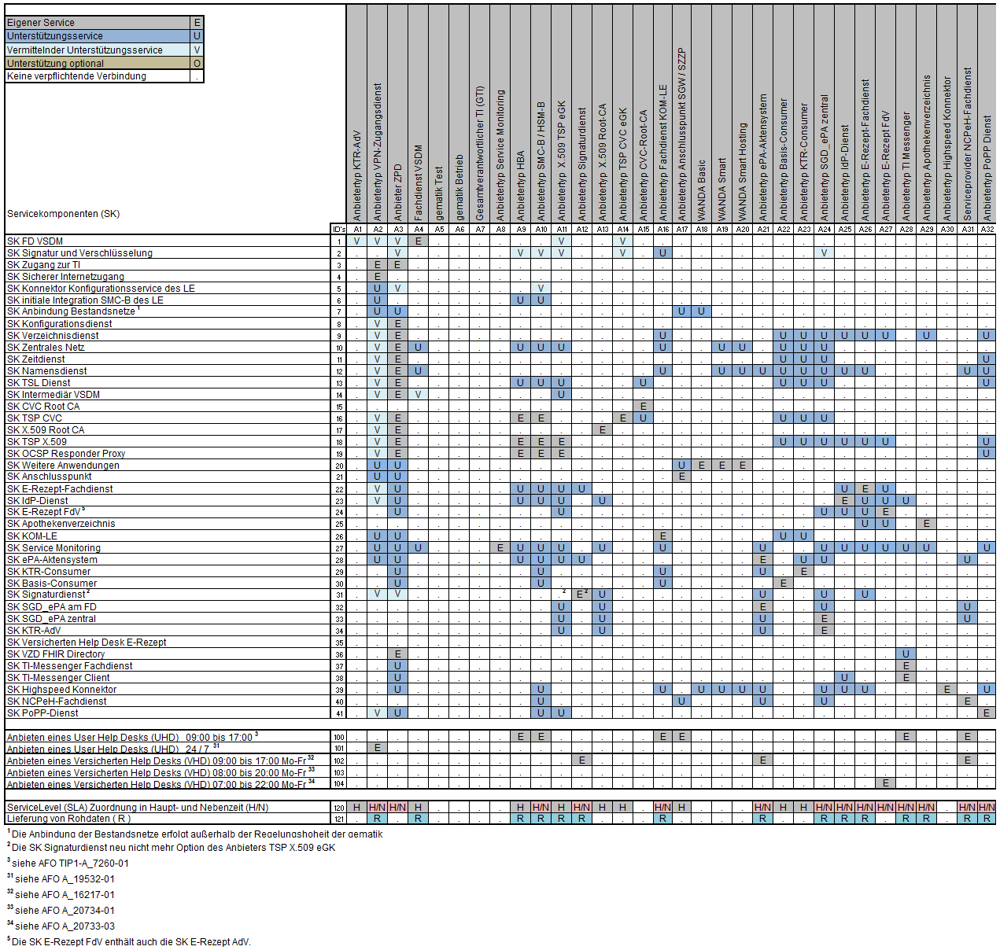

Elektronische Gesundheitskarte und Telematikinfrastruktur
Spezifikation PoPP-Dienst
| Version | 1.0.0 |
| Revision | 578932 |
| Stand | 06.02.2023 |
| Status | in Bearbeitung |
| Klassifizierung | öffentlich |
| Referenzierung | gemSpec_PoPP_Dienst |
Änderungen zur Vorversion
Anpassungen des vorliegenden Dokumentes im Vergleich zur Vorversion können Sie der nachfolgenden Tabelle entnehmen.
<<kurze Beschreibung der inhaltlichen Änderungen (max. ½ Seite)>>
Dokumentenhistorie
| Version |
Stand |
Kap./ Seite |
Grund der Änderung, besondere Hinweise |
Bearbeitung |
|---|---|---|---|---|
<<Genereller Hinweis:
Hidden Text wird blau dargestellt
In doppelten spitzen Klammen gefasste Mustertexte der Vorlage sind Hidden Text und sind für die Druckaufbereitung normalerweise ausgeblendet.
In einfachen spitzen Klammern gesetzte Begriffe sind Platzhalter und sinngemäß auszutauschen bzw. zu entfernen.
Alle Anforderungen und Abbildungen sind Muster und zu entfernen.
Fachliche Formulierungen und Abbildungen aus dem Kontext der TI sind beispielhaft und müssen entfernt werden
Weitere Hinweise – insbesondere zum Umgang mit Anforderungen – siehe Kap. 2.>>
Die vorliegende Spezifikation definiert die Anforderungen zu Herstellung, Test und Betrieb des Produkttyps <Produkttyp>.
<Beispiel: Die vorliegende Spezifikation definiert die Anforderungen zu Herstellung, Test und Betrieb des Produkttyps ABC.>
<Danach kurze fachliche Einordnung des Dokumentengegenstands.>
Das Dokument richtet sich an <Benennungen>.
<Beispiel: Das Dokument richtet sich an Hersteller von Produkten des Produkttyps ABC sowie an Hersteller und Anbieter von weiteren Produkttypen der Fachanwendung XYZ.>
Dieses Dokument enthält normative Festlegungen zur Telematikinfrastruktur des deutschen Gesundheitswesens. Der Gültigkeitszeitraum der vorliegenden Version und deren Anwendung in Zulassungs- oder Abnahmeverfahren wird durch die gematik GmbH in gesonderten Dokumenten (z.B. Dokumentenlandkarte, Produkttypsteckbrief, Leistungsbeschreibung) festgelegt und bekanntgegeben.
Schutzrechts-/Patentrechtshinweis
Die nachfolgende Spezifikation ist von der gematik allein unter technischen Gesichtspunkten erstellt worden. Im Einzelfall kann nicht ausgeschlossen werden, dass die Implementierung der Spezifikation in technische Schutzrechte Dritter eingreift. Es ist allein Sache des Anbieters oder Herstellers, durch geeignete Maßnahmen dafür Sorge zu tragen, dass von ihm aufgrund der Spezifikation angebotene Produkte und/oder Leistungen nicht gegen Schutzrechte Dritter verstoßen und sich ggf. die erforderlichen Erlaubnisse/Lizenzen von den betroffenen Schutzrechtsinhabern einzuholen. Die gematik GmbH übernimmt insofern keinerlei Gewährleistungen.
Spezifiziert werden in dem Dokument die von dem Produkttyp bereitgestellten (angebotenen) Schnittstellen. Benutzte Schnittstellen werden hingegen in der Spezifikation desjenigen Produkttypen beschrieben, der diese Schnittstelle bereitstellt. Auf die entsprechenden Dokumente wird referenziert (siehe auch Anhang ).
Die vollständige Anforderungslage für den Produkttyp ergibt sich aus weiteren Konzept- und Spezifikationsdokumenten, diese sind in dem Produkttypsteckbrief des Produkttyps <Produkttyp> verzeichnet.
<sofern erforderlich, sind Abgrenzungen zu anderen Spezifikationen/Konzepten oder im Kontext derzeit nicht relevanten Themen vorzunehmen, andernfalls entfällt dieser Absatz>
<Nicht Bestandteil des vorliegenden Dokumentes sind die Festlegungen zum Themenbereich... >
<usw.>
Anwendungsfälle und Anforderungen als Ausdruck normativer Festlegungen werden durch eine eindeutige ID,
Anforderungen zusätzlich durch die dem RFC 2119 [RFC2119] entsprechenden, in Großbuchstaben geschriebenen deutschen Schlüsselworte MUSS, DARF NICHT, SOLL, SOLL NICHT, KANN gekennzeichnet.
Da in dem Beispielsatz „Eine leere Liste DARF NICHT ein Element besitzen.“ die Phrase „DARF NICHT“ semantisch irreführend wäre (wenn nicht ein, dann vielleicht zwei?), wird in diesem Dokument stattdessen „Eine leere Liste DARF KEIN Element besitzen.“ verwendet. Die Schlüsselworte werden außerdem um Pronomen in Großbuchstaben ergänzt, wenn dies den Sprachfluss verbessert oder die Semantik verdeutlicht.
Anwendungsfälle und Anforderungen werden im Dokument wie folgt dargestellt:
<AF-ID> - <Titel des Anwendungsfalles>
Text / Beschreibung
[<=]
bzw.
<AFO-ID> - <Titel der Afo>
Text / Beschreibung
[<=]
Dabei umfasst der Anwendungsfall bzw. die Anforderung sämtliche zwischen ID und Textmarke [<=] angeführten Inhalte.
<Weitere Methodik-Hinweise (z.B. auf UML als Modellierungsform) sind nicht erforderlich.>
Hinweis auf offene Punkte <<optional; Kasten mit "Offener Punkt" in das entsprechende Kapitel einfügen>>
| Offener Punkt: Das Kapitel wird in einer späteren Version des Dokumentes ergänzt. |
<<hier erfolgt, in knappen Worten und ggf. Diagrammen, ein informativer Überblick über den Produkttyp und die Aufgaben die er erfüllt, und die Nachbarsysteme und Rollen, die mit diesem System (Produkttyp) interagieren. Um Redundanzen zu den Konzepten zu vermeiden, kann auf die Konzepte verwiesen werden, in denen relevante Anteile zum Systemüberblick des Produkttyps festgelegt wurden (z.B. relevante Use Cases). Dies Kapitel ist rein informativ, es dürfen keine Anforderungen gestellt werden.>>
<<Optionale Dezidiert auf den Produkttyp bezogene Konkretisierung von Akteuren und Rollen, basierend auf den Festlegen in den Konzepten. Es darf keine normative Wiederholung von Akteuren und Rollen der Konzepte erfolgen.>>
<<Optionale Konkretisierung der Nachbarsysteme, basierend auf den Festlegungen in den Konzepten.>>
<<Das Kapitel (Ebene 1) muss auch dann erhalten bleiben, wenn keine Beschreibung des Kontexts notwendig ist.
Werden keine Festlegungen getroffen, sollte das Kapitel mit dem folgenden Standardsatz erhalten bleiben:
Eine Beschreibung des Systemkontexts ist nicht erforderlich.>>
<<Optional: Falls eine weitere Zerlegung des Produkttyps in Teilsysteme nötig ist, erfolgen alle Festlegungen hierzu in diesem Kapitel. Im weitern Verlauf des Dokuments kann auf die hier festgelegte Teilsysteme zurückgegriffen werden. Speziell können übergreifende Anforderungen für die Teilsysteme gestellt werden (Kapitel 6) und die Funktionsmerkmale die Teilsysteme konkretisieren (Kapitel 7). Das Kapitel muss auch dann erhalten bleiben, wenn keine weitere Zerlegung stattfindet.
Werden keine Festlegungen getroffen, sollte das Kapitel mit dem folgenden Standardsatz erhalten bleiben:
Eine weiter Untergliederung der Aufbaustruktur des Produkttyps ist nicht erforderlich.>>
A_23427
Der PoPP-Dienst MUSS Fehlernachrichten gemäß Tab_Fehlernachricht_Struktur aufbauen. Nutzer der Schnittstellen des PoPP-Dienstes MÜSSEN Fehlernachrichten dieser Struktur verarbeiten.
Tabelle 1: Tab_Fehlernachricht_Struktur
| { "timestamp": "...", "status": ..., "error": "...", "issue": [ { "messageId": "...", "severity": "...", "type": "...", "message": "...", "details": "..." } ] } |
Tabelle 2: Tab_Fehlernachricht_Beispiel
| { "timestamp": "2022-12-22T12:49:05Z", "status": 410, "error": "Gone", "issue": [ { "messageId": "POPP00004", "severity": "fatal", "type": "security", "message": "Challenge veraltet", "details": "Challenge abgelaufen am: 2022-12-22T12:38:07Z. Gegenwärtige Zeit: 2022-12-22T12:48:23Z. Differenz: 10 Minuten 14 Sekunden. Erlaubte Differenz: 10 Minuten 0 Sekunden." } ] } |
A_23428
Der PoPP-Dienst MUSS in Fehlernachrichten JSON-Key-Value-Paare und Kodierungen gemäß Tab_JSON_Key_Values_Fehlernachrichten verwenden. Nutzer der Schnittstellen des PoPP-Dienstes MÜSSEN Fehlernachrichten dieser Struktur verarbeiten. Nutzer der Schnittstellen MÜSSEN vom PoPP-Dienst zusätzlich eingebrachte Key-Value-Paare in Fehlernachrichten tolerieren.
Tabelle 3: Tab_JSON_Key_Values_Fehlernachrichten
| JSON-Key | JSON-Value | Format |
|---|---|---|
| details | Details zum Fehler | siehe Tab_Fehlernachricht_Beispiel |
| error | reason phrase des HTTP status code | gemäß [RFC9110#15] |
| issue | Fehlerstruktur | gemäß Tab_Fehlernachricht_Struktur |
| message | Fehlertext | gemäß Tabellen "*_Fehlerfälle" |
| messageId | ID des Fehlers | gemäß Tabellen "*_Fehlerfälle" |
| severity | Schwere des Fehlers | gemäß Tabellen "*_Fehlerfälle" |
| status | HTTP status code | gemäß [RFC9110#15] |
| timestamp | Zeitstempel | UTC |
| type | Fehlertype | gemäß Tabellen "*_Fehlerfälle" |
<<Vollständig funktionale Zerlegung der Funktionen des Produkttyps in Funktionsmerkmale. I.d.R. ergeben sich die Funktionsmerkmale 1:1 aus den systemspezifischen Konzepten der TI-Plattform. Für die Architektur sind dies die in gemKPT_Arch_TIP definierten Basis-, Infrastruktur- und Netzwerkdienste mit Relevanz für den Produkttyp.>>
<<Ggf. Übersicht aller Funktionsmerkmale und Schnittstellstellen in geeigneter Form>>
<<Hinweis zur Struktur: Sollte nur genau ein Funktionsmerkmal zu beschreiben sein, sollte die überflüssige Gliederungsebene ausgelassen werden und alle untergeordneten Kapitel rücken dementsprechend eine Ebene höher – die Kapitelüberschrift der Eben 1 „7 Funktionsmerkmale“ wird dann ersetzt durch den Titel des Funktionsmerkmals – dann z. B. „7 Basisdienst Kartenverwaltung“, die Unterkapitel zu den einzelnen Schnittstellen rücken auf Ebene 2 etc.>>
A_23267
Der PoPP-Dienst MUSS die Schnittstelle I_PoPP_Service durch verpflichtende Verwendung von TLS mit serverseitiger Authentisierung sichern. Der PoPP-Dienst MUSS sich mit der Identität ID.ZD.TLS-S authentisieren. <=
A_23268
Der PoPP-Dienst und Nutzer der Schnittstelle MÜSSEN die Schnittstelle I_PoPP_Service als Webservice über HTTPS implementieren. Dabei MUSS der PoPP-Dienst mindestens HTTP Version 1.1 unterstützen. <=
A_23372
Der PoPP-Dienst und Nutzer der Schnittstelle MÜSSEN in Request- und Responsenachrichten JSON-Key-Value-Paare und Kodierungen gemäß Tab_JSON_Key_Values verwenden. Der PoPP-Dienst MUSS vom Nutzer der Schnittstelle zusätzlich eingebrachte Key-Value-Paare beim createPoPPToken-Request tolerieren.
Tabelle 4: Tab_JSON_Key_Values_Request_Response_Nachrichten
| JSON-Key | JSON-Value | Format |
|---|---|---|
| alg | Signaturalgorithmus | |
| challenge | Vom PoPP-Dienst erzeugte Challenge | |
| enc_egk_data | Symmetrisch verschlüsselte Daten der eGK (Zertifikat C.CH.AUT etc.) | |
| header | Struktur für Headerinformationen der Nachricht | |
| iat (Issued At) | Zeitstempel des PoPP-Dienstes | Unix-Zeit in Sekundengenauigkeit |
| iss (Issuer) | URL des PoPP-Dienstes | |
| payload | Struktur für Payload der Nachricht | |
| signature | Signatur | |
| signatures | Struktur für eine oder mehrere Signaturen | |
| tid | Telematik-ID | |
| typ | Media type ("JWT") | |
| used_challenge | Vom PoPP-Dienst erzeugte Challenge | |
| x5c | Signaturzertifikat |
A_23315
Der PoPP-Dienst MUSS die Operation I_PoPP_Service:getChallenge als HTTP GET über die URL https://<ToDo: FQDN>/v1/poppService/challenge anbieten. Nutzer der Schnittstelle MÜSSEN die Operation unter dieser URL lokalisieren.
<=
A_23331
Der PoPP-Dienst MUSS die Responses der Operation getChallenge gemäß Tab_getChallenge_Response_Struktur aufbauen. Nutzer der Operation MÜSSEN Responses dieser Struktur verarbeiten.
Tabelle 5: Tab_getChallenge_Response_Struktur
| <challenge> |
A_23430
Der PoPP-Dienst MUSS die Nachricht getChallenge-Response mit dem Content-Type 'text/plain; charset = utf-8' an den Nutzer der Schnittstelle senden. <=
A_23535
Der PoPP-Dienst MUSS bei der Ausführung der Operation getChallenge Fehlersituationen erkennen und Fehlernachrichten gemäß Tab_getChallenge_Fehlerfälle erzeugen.
Tabelle 6 Tab_getChallenge_Fehlerfälle
| http status code | messageId | type | severity | message |
|---|---|---|---|---|
| 500 | POPP00001 | security | fatal | CMAC-Geheimnis nicht verfügbar |
| 500 | POPP00002 | security | fatal | CMAC-Geheimnis abgelaufen |
| 500 | POPP09999 | technical | fatal | Operation fehlgeschlagen |
Ziel der "Challenge" ist es, einen für jeden Beteiligten außer dem PoPP-Dienst unvorhersagbaren Frischeparameter bereitzustellen. Später im Protokoll-Ablauf
Damit ist sichergestellt, dass Zero-Knowledge-Beweise von eGK, gSMC-K und SMC-B (Signaturen, bei denen die DTBS von der Challenge abhängen) nicht vor einer bestimmten Zeit erfolgt sein können (untere Schranke). Beim Ausstellen der PoPP-Nachweises prüft der PoPP-Dienst, dass die im signierten PoPP-Request aufgeführte Challenge tatsächlich vom PoPP-Dienst erzeugt wurde und nicht zu alt ist. Damit ist der Signaturzeitpunkt relativ genau bestimmbar, d. h. der Zeitpunkt, zu dem die Chipkarten dem Primärsystem zur Verfügung standen (Proof of Presence).
A_23264
Der PoPP-Dienst MUSS eine Challenge in Abhängigkeit von seiner aktuellen Systemzeit erzeugen.
Er MUSS dafür die aktuelle Systemzeit als Unix-Zeit mit Sekundengenauigkeit als UTF-8 kodierte Zeichenkette kodieren (Nachkommastellen sind abzuschneiden). Beispiel: 1666552275. Von der so kodierten Unix-Zeit MUSS er unter Nutzung des PoPP-Dienst-internen CMAC-Schlüssels per AES-CMAC [RFC-4493#2.4] den CMAC-Wert berechnen und diesen base64-kodieren. Beide Teile (kodierte Zeit und kodierter CMAC) MUSS er per Doppelpunkt zusammenführen. Beispiel: 1666552275:Wm1GR8T7wWRhc2jma54itA==. Dies ist dann die Challenge, die ein Nutzer der Schnittstelle bei Anfrage (getChallenge) als Antwort erhält. (vgl. A_23331-*)
<=
Beispiel:
| Unix-Zeit | Challenge falls der CMAC-Schlüssel gleich (hexdump) 000102030405060708090a0b0c0d0e0f ist |
|---|---|
| 1676844358 | 1676844358:1lqqztdpnYAGLU595CLWnw== |
| 1676844362 | 1676844362:h2+tXx4OvhfPBNHXFsaaig== |
| 1676844364 | 1676844364:Um2y1eDwh3Uff8n2Z0mGBg== |
| 1676844366 | 1676844366:t5suhxYrluIcfl0buEHu3Q== |
| 1676844367 | 1676844367:6ZtrBGkWlBspXsKLeREJaQ== |
Hinweis:
$ python -c 'import time; print(int(time.time()))'
1676992804
A_23396
Der PoPP-Dienst MUSS den CMAC-Schlüssel halbjährlich zufällig neu erzeugen. Die Anforderungen zur Schlüsselerzeugung gemäß [gemSpec_Krypt#GS-A_4368] MUSS der PoPP-Dienst umsetzen.
Nach Neuerzeugung des CMAC-Schlüssels MUSS der PoPP-Dienst für eine Übergangszeit von einer Stunde zwei CMAC-Schlüssel parallel vorhalten und bei Anfragen (createPoPPToken) sowohl den alten als auch den neuen CMAC-Schlüssel unterstützen. Nach Ablauf der Übergangszeit MUSS der PoPP-Dienst den alten CMAC-Schlüssel löschen und auf dem alten CMAC-Schlüssel basierende Challenges ablehnen.
<=
A_23553
Der PoPP-Dienst MUSS den CMAC-Schlüssel (vgl. A_23264) vertraulich im Dienst verwahren.
<=
A_23316
Der PoPP-Dienst MUSS im Erfolgsfall eine getChallenge-Response erzeugen und an den Aufrufer zurückgeben.
<=
A_23318
Der PoPP-Dienst MUSS die Operation I_PoPP_Service:createPoPPToken als HTTP POST über die URL https://<ToDo: FQDN>/v1/poppService/poPPToken anbieten. Nutzer der Schnittstelle MÜSSEN die Operation über diese URL lokalisieren.
<=
A_23321
Nutzer der Operation createPoPPToken MÜSSEN die Requests gemäß Tab_createPoPPToken_Request_Struktur aufbauen. Der PoPP-Dienst MUSS Requests dieser Struktur verarbeiten.
Tabelle 7: Tab_createPoPPToken_Request_Struktur
| Struktur des Request: { "payload": "...", "signatures": [ { "header": { "alg": "…", "x5c": [ "..." ] }, "signature": "..." }, { "header": { "alg": "…", "x5c": [ "..." ] }, "signature": "..." } ] } Struktur des Payload: { "challenge": "...", "enc_egk_data": "..." } |
A_23308
Der PoPP-Dienst MUSS die Responses der Operation createPoPPToken gemäß Tab_createPoPPToken_Response_Struktur aufbauen. Nutzer der Operation MÜSSEN Responses dieser Struktur verarbeiten.
Tabelle 8: Tab_createPoPPToken_Response_Struktur
| Struktur der Response: Die Struktur der Response folgt JWS Compact Serialization gemäß [RFC-7515]. Die Signaturerstellung erfolgt nach [RFC-7515]. Für die Kodierung wird Base64URL [RFC-7515#7.1] verwendet. Die Response enthält drei durch "." getrennte Abschnitte: <base64URL-kodierter Header>.<base64URL-kodierter Payload>.<base64URL-kodierte Signatur> Struktur des Header: { "typ": "JWT", "alg": "...", "x5c": [ "..." ] } Struktur des Payload: { "iat": ..., "tid": "...", "used_challenge": "...", "enc_egk_data": "...", "iss": "..." } |
A_23534
Der PoPP-Dienst MUSS bei der Ausführung der Operation createPoPPToken Fehlersituationen erkennen und Fehlernachrichten gemäß Tab_createPoPPToken_Fehlerfälle erzeugen.
Tabelle 9 createPoPPToken_Fehlerfälle
| http status code | messageId | type | severity | message |
|---|---|---|---|---|
| 400 | POPP00051 | security | fatal | CMAC ungültig |
| 410 | POPP00052 | security | fatal | Challenge veraltet |
| 400 | POPP00053 | technical | fatal | Request ungültig |
| 403 | POPP00054 | security | fatal | Signatur ungültig (AK.AUT) |
| 403 | POPP00055 | security | fatal | Zertifikat offline ungültig (AK.AUT) |
| 502 | POPP00056 | security | fatal | OCSP-Abfrage nicht möglich (AK.AUT) |
| 403 | POPP00057 | security | fatal | Zertifikat online ungültig (AK.AUT) |
| 403 | POPP00058 | security | fatal | Signatur ungültig (HCI.AUT) |
| 403 | POPP00059 | security | fatal | Zertifikat offline ungültig (HCI.AUT) |
| 502 | POPP00060 | security | fatal | OCSP-Abfrage nicht möglich (HCI.AUT) |
| 403 | POPP00061 | security | fatal | Zertifikat online ungültig (HCI.AUT) |
| 500 | POPP09999 | technical | fatal | Operation fehlgeschlagen |
Hinweis: Im folgenden Beispiel-Protokoll-Durchlauf (erzeugt mit der PoC-Implementierung der gematik) stimmen Details wie bspw. die OIDs in den Beispiel-Zertifikaten noch nicht 100%-ig. Dies wird in einer Folge-Version der Spezifikation aktualisiert. Ziel ist es, um das Verständnis zu verbessern, ein Beispiel in seiner Gesamtheit einmal "vorzurechnen".
Tabelle 10: Tab_Beispiel_Protokolldurchlauf
| Response vom PoPP-Dienst auf GET /v1/poppService/challenge { "challenge": "1670535981:YRJrjwAy2jKf4Z4xd/ZC/w==" } Request des Konnektor, POST auf /v1/poppService/poPPToken { "payload": "ewogICAgImNoYWxsZW5nZSI6ICIxNjcwNTM1OTgxOllSSnJqd0F5MmpLZjRaNHhkL1pDL3c9PSIsCiAgICAiZW5jX2Vna19kYXRhIjogIkZUZ0w0aElwM0orVGRQLzBhL0Vtb01yOGh3c09nUDhvTFJUOGtFVGN1UmtuTCtuK1NIb0M5VUQ2SkpyVTh6dngrbjBObHN0eHZiOWVuc1VMT0tTQjQrN0hjOCttQWhpdW5PRHZ0c0hma0FlRHIvc3ZDWW1vMEVqRnlMREJFaW5LOXo5ZUdMQ2RKYXBvK2tmU3dIUGVQeWc3VWpqRGRDdGJENTJBRTFOdXdpc0YzbjM2ODlXMVNtRWtrSG01QXlaMlo4akJFV2JJc0l1VWp3YTRHUFBiZHZKaXg3MGkxTTZiK28ybm9JZWY4eEpFajFKYjB1bVhYT1dhUTlBRWN0ekJwM0U0QzIyYkpZRmMrSkVoU0t5S2NBUU9TMXhRVDJaV3RrRWdqYXh2YkxGZUgwUTcwVGh1NWRxQ2U3enR5YUJBUkFrZzFNRGF5WFk0MFdMRE9VcEw2RWxTS05rUjZRYjUxV3ByTVlFeG5RV0JXMTRBQ2ZXZFZvZjArM0NhRWd4UTg4SlNrSWdyR0U0dFU5SjRzcTRjZVhyTE1ydlpJNDlWQ2RFWWt5NURMemk5TllWOVJaMDVNSW9xcTJHNWgwQmVpdlAxb0I4Zlh1UURVSTA2UnZiSjNpN3dvcjllRzZKeXNSTjE0V2F1ejlQS1hmcEw3R001eWRwbmZQSVcwU2NoTzYyeGVHU29YMjRUYjRHcW1kaDNtVlFOMTFWdENkVTBTT1hmU2FucElmaklkL2xac0EvTWdLMm1QZng0N2JNM0pqb2Q1KzVPbWpzVW1KSHFmcHpCajZSQTFmZWRkeE9TSEtNMkVtZER4aU1NNVBJRHU3U2pGQjI4Y0Z2WEN6eHBCVGxiWno3dG55aXptVW8wT2FYLzMrMGJQZkZhZTBLaWhyZ2JQMDBIWGMyQm5COGExR1FCY0Q4OVU2UDBJV0pDVEJjM3FmRXAxd1I4elVBSTJvaEpVWWNjdHZQdzhRemtMTytwQWxNMW5XOW11U0xMVEI0eVJrQzhJczB0TXdzeVVkOHMvbVA4WFViajJjemMvTnY0MitRalAyaDhLQU0vUGo1a2JzUm9DOG16WDJrck5JbGs1QWtLd2NwdFZUY0l3QytqNTFXRU9RaGhpaFdoOWtraUk2UGZjNE5LdXFqdjVmaW52cVNkdWREYUo0dGRrRjhmU3FlY3p2V0prc3REdFlSSWMzVWtuZjVHZFYzNnQyNlV6WWUvUzRDSlFRM0YzSHNabk5VTWdMRlNUWDE3YnA4Q1RyODBnNCtSUHJFRHFWeFYyeVBzYUhvWmZzbmdRczh1YTUvSzlmd09vSjVldEwvS2Izenl3UTNhQmFJSFBPaUwzdGNuMGYrTmk1MnpxdnM5dCt3PSIKfQ==", "signatures": [ { "header": { "alg": "RS256", "x5c": [ "MIIDcDCCAlgCFGLhrD3t7FkGOlQzHCJgfzGAdZpQMA0GCSqGSIb3DQEBCwUAMGYxCzAJBgNVBAYTAkRFMQ8wDQYDVQQIDAZCZXJsaW4xDzANBgNVBAcMBkJlcmxpbjEQMA4GA1UECgwHZ2VtYXRpazEQMA4GA1UECwwHZ2VtYXRpazERMA8GA1UEAwwIU01DLUItQ0EwHhcNMjIxMDIzMTMzMjQwWhcNMjMxMDIzMTMzMjQwWjCBgjELMAkGA1UEBhMCREUxDzANBgNVBAgMBkJlcmxpbjEPMA0GA1UEBwwGQmVybGluMRAwDgYDVQQKDAdnZW1hdGlrMRAwDgYDVQQLDAdnZW1hdGlrMS0wKwYDVQQDDCRBcnR6cHJheGlzIFRJRD00OjE6MTIzMTMyMTQyMzU0MzI0MTEwggEiMA0GCSqGSIb3DQEBAQUAA4IBDwAwggEKAoIBAQDR6kjVj5NFBACYfP0Of06/mcFhEIUIH9QklcPZvkc7k3LX1p8KzQ/qGF2ASHz9ZZcmHpghUIF/NcVtNcnPpYvLMDOn92Tvm7E6x3F8+NUw/242C62+DIDk+X0aPOTEQ+uS2AbG3gl0zSAHNGTqQjmsPeoxrmjkNGbKx3GXOiqnJFcpq6OG4CMaQrqaPjWZJ9yoFEKHy1+HR6N7yzS0lUlKe6qRpkfW28aSpqa26mcAzNdkfdUUoPI9RideqOW2W5msMdZYXCsIlG5pFYE881FhzfeeoEiapEOiYyKJERbYpIn98DRDDaPWuaUgvImYGW/Tk2LmRli5XbWaidWxC8pXAgMBAAEwDQYJKoZIhvcNAQELBQADggEBAL/zq/Vdou1ugRo5kMSnJYeXY3xLJM3mEkf1FJN/CljntiS07z30fUNnUce4jfch7OY98dRrfB3D1D5WUG9Cito5Ztx9kMIYsTOJJfrF4OWHZXpvOxACdTjsf6a2KIJZiNqeg3ux81ynxkg14TrsGC2q4iaHoqH0wdBa5V8wgSGA8gtim+pbn6+ZC82xePrLpk4ResxczUf7mpiOfC+3NNStDr1WqzH6rtPIriRldDbZ3Md2ncKRBPh9QBbcodLDqurOHG2M/H3eZ2QdckuLal/onJ8cd+uOdtZAE0MLhLAsZ+bb4iSqN/R40DP7y6R9wUN6tYMiI+1buXErwWM08tA=" ] }, "signature": "XQrQWx_e_8o905iE4Y6n5msOO_TMUGf8wDxgVy9C1UVxVDFq9a98bLsItj1I-apbPItp--azYSumyfHjg5pCa53OC-sKe2bhXCRVrS7APEiTu8sJkypuX9kI9I2rcD3ilnVQXfoBb1R-YRz0tDYE95A7lNJzc6kpGL_7FlRUbOky3lPgZBvth5NkixwJqv7MKRYnFRngUVQa8y7IEwLE0198M9tqD0EH9PH4deB4ZNvjm5Sf3kCwsXeuqSKXmOTl4w1ZQi7xNPv0-iIj00C5PNg-UJBU3__jx3RO9SRQBtn7tQZBklT_yl4hYu2rtnIKumjdfT6Vm4qmwVBbMJsLyw==" }, { "header": { "alg": "PS256", "x5c": [ "MIIB4jCCAYgCFGf+ShVJZKpcC7k+p2IYQkJXCe2NMAoGCCqGSM49BAMCMHAxCzAJBgNVBAYTAkRFMQ8wDQYDVQQIDAZCZXJsaW4xDzANBgNVBAcMBkJlcmxpbjEQMA4GA1UECgwHZ2VtYXRpazEQMA4GA1UECwwHZ2VtYXRpazEbMBkGA1UEAwwSS29tcG9uZW50ZW4tUEtJLUNBMB4XDTIyMDkyNDA3NTIzN1oXDTIzMDkyNDA3NTIzN1owdjELMAkGA1UEBhMCREUxDzANBgNVBAgMBkJlcmxpbjEPMA0GA1UEBwwGQmVybGluMRAwDgYDVQQKDAdnZW1hdGlrMRAwDgYDVQQLDAdnZW1hdGlrMSEwHwYDVQQDDBhLb25uZWt0b3ItQUstWmVyaXRpZmlrYXQwWjAUBgcqhkjOPQIBBgkrJAMDAggBAQcDQgAEEXKDSSXSBkJ2gyQYX0e8gxCQFch2hUlGqRrTRmsWx4UTwOX68uiyFCGv4E4fMZpzU7xKXSFDBtgpo2omJU4mbDAKBggqhkjOPQQDAgNIADBFAiEAkFSKpKfxvqholKnaOv7M1q1v50WYcEOkdLfCfg7Cz2YCIAUwOF7zEBFOZGL81ebsLVH/PcXN1Qpun7GP5Ov1Jzcs" ] }, "signature": "auCaJrcfN1OaisE5HsZVB-QCfpCt3BVkhtuu7b1QlXyjeA9UR3NG3dnLbmdWE2Ml3dLhHxHo5Ya-CEUFa96Rmg==" } ] } Im Beispiel hat die SMC-B nur ein RSA-AUT-Zertifikat und der Konnektor besitzt RSA- und ECC-X.509-Zertifikate. Deshalb verwendet der Konnektor gemäß A_23319 das ECC-Material für die SMC-K-AUT-Signatur. Der Wert in o. g. "payload" base64-dekodiert: { "challenge": "1670535981:YRJrjwAy2jKf4Z4xd/ZC/w==", "enc_egk_data": "FTgL4hIp3J+TdP/0a/EmoMr8hwsOgP8oLRT8kETcuRknL+n+SHoC9UD6JJrU8zvx+n0Nlstxvb9ensULOKSB4+7Hc8+mAhiunODvtsHfkAeDr/svCYmo0EjFyLDBEinK9z9eGLCdJapo+kfSwHPePyg7UjjDdCtbD52AE1NuwisF3n3689W1SmEkkHm5AyZ2Z8jBEWbIsIuUjwa4GPPbdvJix70i1M6b+o2noIef8xJEj1Jb0umXXOWaQ9AEctzBp3E4C22bJYFc+JEhSKyKcAQOS1xQT2ZWtkEgjaxvbLFeH0Q70Thu5dqCe7ztyaBARAkg1MDayXY40WLDOUpL6ElSKNkR6Qb51WprMYExnQWBW14ACfWdVof0+3CaEgxQ88JSkIgrGE4tU9J4sq4ceXrLMrvZI49VCdEYky5DLzi9NYV9RZ05MIoqq2G5h0BeivP1oB8fXuQDUI06RvbJ3i7wor9eG6JysRN14Wauz9PKXfpL7GM5ydpnfPIW0SchO62xeGSoX24Tb4Gqmdh3mVQN11VtCdU0SOXfSanpIfjId/lZsA/MgK2mPfx47bM3Jjod5+5OmjsUmJHqfpzBj6RA1feddxOSHKM2EmdDxiMM5PIDu7SjFB28cFvXCzxpBTlbZz7tnyizmUo0OaX/3+0bPfFae0KihrgbP00HXc2BnB8a1GQBcD89U6P0IWJCTBc3qfEp1wR8zUAI2ohJUYcctvPw8QzkLO+pAlM1nW9muSLLTB4yRkC8Is0tMwsyUd8s/mP8XUbj2czc/Nv42+QjP2h8KAM/Pj5kbsRoC8mzX2krNIlk5AkKwcptVTcIwC+j51WEOQhhihWh9kkiI6Pfc4NKuqjv5finvqSdudDaJ4tdkF8fSqeczvWJkstDtYRIc3Uknf5GdV36t26UzYe/S4CJQQ3F3HsZnNUMgLFSTX17bp8CTr80g4+RPrEDqVxV2yPsaHoZfsngQs8ua5/K9fwOoJ5etL/Kb3zywQ3aBaIHPOiL3tcn0f+Ni52zqvs9t+w=" } Der vom Konnektor erzeugte und verwendete Pseudonymisierungsschlüssel (base64-kodiert): TvRIybprnMLZD9H8GnRcnw== Antwort des PoPP-Dienstes auf diesen Request: eyJ0eXAiOiJKV1QiLCJhbGciOiJFUzI1NiIsIng1YyI6WyJNSUlCMHpDQ0FYb0NGR2YrU2hWSlpLcGNDN2srcDJJWVFrSlhDZTJNTUFvR0NDcUdTTTQ5QkFNQ01IQXhDekFKQmdOVkJBWVRBa1JGTVE4d0RRWURWUVFJREFaQ1pYSnNhVzR4RHpBTkJnTlZCQWNNQmtKbGNteHBiakVRTUE0R0ExVUVDZ3dIWjJWdFlYUnBhekVRTUE0R0ExVUVDd3dIWjJWdFlYUnBhekViTUJrR0ExVUVBd3dTUzI5dGNHOXVaVzUwWlc0dFVFdEpMVU5CTUI0WERUSXlNRGt5TkRBM05USXpOMW9YRFRJek1Ea3lOREEzTlRJek4xb3dhREVMTUFrR0ExVUVCaE1DUkVVeER6QU5CZ05WQkFnTUJrSmxjbXhwYmpFUE1BMEdBMVVFQnd3R1FtVnliR2x1TVJBd0RnWURWUVFLREFkblpXMWhkR2xyTVJBd0RnWURWUVFMREFkblpXMWhkR2xyTVJNd0VRWURWUVFEREFwR1lXTm9aR2xsYm5OME1Gb3dGQVlIS29aSXpqMENBUVlKS3lRREF3SUlBUUVIQTBJQUJLSkpwdG11amJjTFIwRUk2TS9IVjQ5NTBLdklFeVhtcXFtWFQ3cmFGZ1U3ZmpwTWc0QzhZNXRzK0h4TDM4YjVzR2JhanJWRGZlSGw2bWo3dzBJNGsyZ3dDZ1lJS29aSXpqMEVBd0lEUndBd1JBSWdYSkxBNTVLL25mOWdBamZJbzhXUXBiSWZzQzJma0llRmFBS1M4M0xLSWJvQ0lISGxKTFp0RUVmYjh5T2EwZXNOSDhIZUdYc3VZeHRXWVhHQ01MVHhMZWR2Il19.eyJpYXQiOjE2NzA1MzIzODEuNTk1NTc3LCJ0aWQiOiI0OjE6MjIzNDMxNDM0MyIsInVzZWRfY2hhbGxlbmdlIjoiMTY3MDUzNTk4MTpZUkpyandBeTJqS2Y0WjR4ZC9aQy93PT0iLCJlbmNfZWdrX2RhdGEiOiJGVGdMNGhJcDNKK1RkUC8wYS9FbW9Ncjhod3NPZ1A4b0xSVDhrRVRjdVJrbkwrbitTSG9DOVVENkpKclU4enZ4K24wTmxzdHh2YjllbnNVTE9LU0I0KzdIYzgrbUFoaXVuT0R2dHNIZmtBZURyL3N2Q1ltbzBFakZ5TERCRWluSzl6OWVHTENkSmFwbytrZlN3SFBlUHlnN1VqakRkQ3RiRDUyQUUxTnV3aXNGM24zNjg5VzFTbUVra0htNUF5WjJaOGpCRVdiSXNJdVVqd2E0R1BQYmR2Sml4NzBpMU02YitvMm5vSWVmOHhKRWoxSmIwdW1YWE9XYVE5QUVjdHpCcDNFNEMyMmJKWUZjK0pFaFNLeUtjQVFPUzF4UVQyWld0a0VnamF4dmJMRmVIMFE3MFRodTVkcUNlN3p0eWFCQVJBa2cxTURheVhZNDBXTERPVXBMNkVsU0tOa1I2UWI1MVdwck1ZRXhuUVdCVzE0QUNmV2RWb2YwKzNDYUVneFE4OEpTa0lnckdFNHRVOUo0c3E0Y2VYckxNcnZaSTQ5VkNkRVlreTVETHppOU5ZVjlSWjA1TUlvcXEyRzVoMEJlaXZQMW9COGZYdVFEVUkwNlJ2YkozaTd3b3I5ZUc2SnlzUk4xNFdhdXo5UEtYZnBMN0dNNXlkcG5mUElXMFNjaE82MnhlR1NvWDI0VGI0R3FtZGgzbVZRTjExVnRDZFUwU09YZlNhbnBJZmpJZC9sWnNBL01nSzJtUGZ4NDdiTTNKam9kNSs1T21qc1VtSkhxZnB6Qmo2UkExZmVkZHhPU0hLTTJFbWREeGlNTTVQSUR1N1NqRkIyOGNGdlhDenhwQlRsYlp6N3RueWl6bVVvME9hWC8zKzBiUGZGYWUwS2locmdiUDAwSFhjMkJuQjhhMUdRQmNEODlVNlAwSVdKQ1RCYzNxZkVwMXdSOHpVQUkyb2hKVVljY3R2UHc4UXprTE8rcEFsTTFuVzltdVNMTFRCNHlSa0M4SXMwdE13c3lVZDhzL21QOFhVYmoyY3pjL052NDIrUWpQMmg4S0FNL1BqNWtic1JvQzhtelgya3JOSWxrNUFrS3djcHRWVGNJd0MrajUxV0VPUWhoaWhXaDlra2lJNlBmYzROS3VxanY1ZmludnFTZHVkRGFKNHRka0Y4ZlNxZWN6dldKa3N0RHRZUkljM1VrbmY1R2RWMzZ0MjZVelllL1M0Q0pRUTNGM0hzWm5OVU1nTEZTVFgxN2JwOENUcjgwZzQrUlByRURxVnhWMnlQc2FIb1pmc25nUXM4dWE1L0s5ZndPb0o1ZXRML0tiM3p5d1EzYUJhSUhQT2lMM3RjbjBmK05pNTJ6cXZzOXQrdz0iLCJpc3MiOiJodHRwczovL3BvcHAudGVsZW1hdGlrLiJ9.psV23oKaw7nMJ8lI2aJTrM5_3jrn0gNd9lukpdLP1dse0wJFoTQ9g0syjhoNuxra2BqhAspHcpDU51clPirkdA In diesem Token ([RFC-7519], [RFC-7515]) gibt es drei durch "." getrennte Abschnitte. Im mittleren Abschnitt befindet sich der payload, welche base64url-dekodiert [RFC-7515#7.1] folgenden Wert besitzt. (Hinweis: https://jwt.io kann man gut zum Dekodieren verwenden.) { "iat": 1670531708.043164, "tid": "4-1-2234314343", "used_challenge": "1670535307:0fEFISWL7SB9FvpRwqVHqg==", "enc_egk_data": "nkZkt/mC2jKjk3JrutsMmGslChRA9oH4hAA5Saswa7XU7cJHPIOCobfXZINBJX2Sd5/lQMAcfwgvEGQ2dtQ2bIfGpR8w4jVjNdZAbVuF+UVehWMRxWWGFzauW/Tbo5NyIB4PL7AajyPbNDM8m1A4sXRE5lWZ7CVAAs2cyIKIZU81255/OdUNVwUCXSP8YrSdCFTTG64imikJR9q0ijONXhbt8QuQ+k2qcwqmgiJYq00w1u3WevmtIbXguu7PCSBqUyi7CQspNuzDWyV0iNISp4tnhU7m20UGpxqPDa/o3ZFSilKEqgJ5lv605sK3358AoHRNlEe/PBjUPk3X3NyYadqBa+snJzg7e4SqKoz/oimQMy5HEW7m6zTRgg2isQZrVvdrJhIrbCmX+FDhMZK/Cfedn2IEwZLCGVCcZkbnmvpq5kUplupf5v0Q6PTGgwklehJcqeYRrdOr7/xv2uMqlyud+t4wrh1J1Y9X21GXDngeZISL4FKjEMfTWgRfzV6wXgr8vKhU8BTkbMaU8NBRMRpAAYCOxzIGqZVzPCazGzEFJu+m1/eeODu2JBUfNJ8854w+mE6Hn1JRCw274hvIddyTgoZKmufnKnGMEOIF3tihQiXm4hoWSbRdyBqaRv3Nu5c6Bf1KymqOhNWcVbuFoDFddnFU5O8FCZ7emPpbgHRbyvx1kt5W0dK4UH9Le/4pF5pBK1C497b/PjUcXnEg9ifVuhehDAavDg79B4OQhUvB6bdVme4wHGC/NKs8f2+iT+hyTmOQ1j2VRofhi/dQtBP8zoy+dJXRBCjfDjkZ7C/fcf9guQgu4lmZxjcf5TlUQlRaFgVra5JF1XUp/Zxc1THRkLEd2oJF96GaVjWDoNwBZ16OYr6zk/0qB2L0CrvgGGCVUVjFRUtRlugBWXavihNuuuiVaIfCd6lceKUjCRE1zdYZ9mT/SrqytnZOE/yEM3pj8di9eyIqEs1LyAe0oUPcRHEOfOobRcyNCya8K4PQGzYGzFU4inP8L2JWMM+x5xOzlY0=", "iss": "https://popp.telematik." } Der Rückgabewert des PoPP-Dienstes ("eyJ0eXAiO...") ist das PoPP-Token (PoPP-Nachweis). Dieses wird neben dem (De-)Pseudonymisierungsschlüssel an das aufrufende Primärsystem als Antwort übergeben (vgl. Abschnitt (A_23323)). |
A_23320
Der PoPP-Dienst MUSS die mit den Identitäten ID.AK.AUT und ID.HCI.AUT erstellten Signaturen des Payload des createPoPPToken-Request prüfen. Der PoPP-Dienst MUSS die Signaturzertifikate C.AK.AUT und C.HCI.AUT gemäß TUC_PKI_018 prüfen (Prüfmodus=OCSP, TOLERATE_OCSP_FAILURE=false). Zertifikatsprüfergebnisse und OCSP-Antworten dürfen bis zu 12 Stunden gecacht und wiederverwendet werden. <=
A_23307
Der PoPP-Dienst MUSS prüfen, ob die im createPoPPToken-Request enthaltene Challenge ("challenge") vom PoPP-Dienst stammt, indem er den in der Challenge enthaltenen CMAC prüft. Falls der CMAC ungültig ist ("INVALID" [RFC-4493]), so MUSS der PoPP-Dienst die Abarbeitung des Protokolls mit einem Fehler an den Konnektor abbrechen. <=
A_23312
Der PoPP-Dienst MUSS prüfen, dass die im createPoPPToken-Request enthaltene Challenge ("challenge") nicht älter als 10 Minuten ist. <=
A_23326
Der PoPP-Dienst MUSS den Payload der createPoPPToken-Response mit dem privaten Schlüssel der Identität ID.ZD.SIG mit der technischen Rolle oid_popp signieren. Der PoPP-Dienst MUSS den Signaturalgorithmus entsprechend des vom ZD.SIG-Zertifikats unterstützten Schlüssels wählen. Den Bezeichner MUSS der PoPP-Dienst gemäß Tab_createPoPPToken_Response_Signaturalgorithmen verwenden. Die Signatur der Response erfolgt nach [RFC-7515].
Tabelle 11: Tab_createPoPPToken_Response_Signaturalgorithmen
| Schlüssel | Signaturalgorithmus | Bezeichner für "alg" |
|---|---|---|
| ECC auf der Kurve P-256 | ECDSA P-256 SHA-256 | ES256 |
| ECC auf der Kurve brainpoolP256r1 | ECDSA brainpoolP256r1 SHA-256 | BP256R1 |
A_23317
Der PoPP-Dienst MUSS die createPoPPToken-Response erzeugen und an den Aufrufer zurückgeben. <=
A_23309
Der PoPP-Dienst MUSS die TSL einmal täglich vom TSL-Dienst beziehen, deren Integrität und Aktualität prüfen und die vertrauenswürdigen Komponenten-CAs und CAs der TSPs-SMC-B extrahieren. <=
A_23310
Der Anbieter des PoPP-Dienstes MUSS in den Nameservern TI die Resource Records gemäß Tabelle Tab_PoPP_DNS_SD verwalten.
Tabelle 12: Tab_PoPP_DNS_SD
| Resource Record Bezeichner | Beschreibung |
|---|---|
| _popp._tcp.telematik. | SRV Resource Record zur Ermittlung von FQDN und Port des PoPP-Dienstes |
| FQDN des PoPP-Dienstes | A Resource Record zur Namensauflösung von FQDN des PoPP-Dienstes in IP-Adresse |
<< Optional wenn für dieses Funktionsmerkmal eine spezielle Testunterstützung benötigt wird. Hier sind speziell nötige Umsetzungen für den Produkttyp aus der Testarchitektur durchzuführen. Hierbei kann es sich um spezifische Ausprägungen des Produkttypen für Testumgebungen handeln, aber auch um spezielle Testfunktion die im Wirkbetrieb aktivierbar bzw. nutzbar sein müssen.
Werden keine Festlegungen getroffen, sollte das Unterkapitel mit dem folgenden Standardsatz erhalten bleiben:
Zur Unterstützung von Tests im Zusammenhang mit dem Funktionsmerkmal werden keine gesonderten Festlegungen getroffen >>
<< Optional: Hardwaremerkmale im Kontext des Funktionsmerkmals. Beispielsweise HW-Schnittstellen oder andere HW-Bestandteile mit Sichtbarkeit nach Außen (z.B. Bedienelemente).
Werden keine Festlegungen getroffen, sollte das Unterkapitel mit dem folgenden Standardsatz erhalten bleiben:
Das Funktionsmerkmal setzt keine besonderen Hardwaremerkmale voraus. >>
A_23367
Der PoPP-Dienst DARF personenbezogene Daten NICHT protokollieren und NICHT persistieren. <=
A_23558
Der PoPP-Dienst MUSS den privaten Signaturschlüssel, mit dem die PoPP-Token signiert werden, in einem HSM speichern. <=
A_23305
Der Anbieter des PoPP-Dienstes MUSS zur Speicherung des privaten Signaturschlüssel, mit dem die PoPP-Token signiert werden, ein HSM verwenden, dessen Eignung durch eine erfolgreiche Evaluierung nachgewiesen wurde. Als Evaluierungsschemata kommen dabei Federal Information Processing Standard (FIPS) oder Common Criteria mit mindestens folgender Prüftiefe in Frage:
A_23424
Der Anbieter des PoPP-Dienstes MUSS sichere Prozesse zur Personalisierung und des Betriebs des HSMs (A_23305*) definieren und etablieren, die gewährleisten, dass

Tab_KPT_Betr_TI_003 Mitwirkungsverpflichtung im TI-ITSM
| Mitwirkung in den TI-ITSM-Prozessen: |
INC |
PRO |
CHG |
SKM |
SLM |
RF |
Perf |
CapM |
KM |
CSI |
CM |
NM |
| Anbieter Proof-of-Patient-Presence-Dienst |
A/E |
A/E |
A/E |
. |
A/E |
A |
A |
A |
A/E |
. |
A/E |
A/E |
Legende:
INC: Incident Management
PRO: Problem Management
CHG: Change Management
SKM: Servicekatalog Management
SLM: Service Level Management
RF: Request Fulfillment
Perf: Perfomance Management
CapM: Capacity Management
KM: Knowledge Management
CSI: Continual Service Improvement
CM: Configuration Management
NF: Notfall Management
A: Auslöser in INC, PRO, CHG
Auslöser (A) ist, wer Incidents, Problems oder Changes eröffnet.
E: Empfänger von INC, PRO, CHG
Empfänger (E) ist wer Incidents, Problems oder Changes zugewiesen bekommt und dessen vollständige Mitarbeit gewährleistet ist.
Auslöser und Empfänger im SKM
Auslöser (A) ist, wer Änderungen im Service Katalog Management einbringt.
Empfänger (E) ist, wer Änderungen im Service Katalog Management aufnimmt.
Portalanbieter (P) ist, wer das TI-Service-Portal zur Verfügung stellt und selbst Nutzer ist.
A/E: Auslöser und Empfänger im SLM
Auslöser (A) ist, wer Änderungen im Servicelevel Management einbringt.
Empfänger (E) ist, wer im Servicelevel Management an Servicelevel-Reviews teilnimmt.
A/E: Auslöser und Empfänger im RF
Auslöser (A) ist, wer Services bei anderen Anbietern abruft.
Empfänger (E) ist, wer einen Servicekatalog führt und Services anbietet.
A/E: Auslöser und Empfänger im Perf
Auslöser (A) ist, wer Performancereports bzw. Rohdaten-Performance-Berichte sendet.
Empfänger (E) ist die gematik.
A/E: Auslöser und Empfänger im CapM
Auslöser (A) ist, wer Kapazitätspläne führt und reportet.
Empfänger (E) ist die gematik (GTI).
A/E: Auslöser und Empfänger im KM
Auslöser (A) ist, wer Artikel in der Wissensdatenbank einstellt.
Empfänger (E) ist, wer Artikel aus der Wissensdatenbank bezieht.
A/E: Auslöser und Empfänger im CSI
Auslöser (A) ist, wer ein CSI-Register führt und reportet.
Empfänger (E) ist die gematik (GTI).
A/E: Auslöser und Empfänger im CM
Auslöser (A) ist, wer Reports sendet, in denen die Konfigurationen der verwendeten Produkte dargestellt werden.
Empfänger (E) ist, wer Konfigurationsvorgaben und deren Umsetzung dar z.B. im Zuge eines CRs oder Changes empfängt und umsetzt.
A/E: Auslöser und Empfänger im NM
Aktiv (A) ist, wer im Notfall zuarbeiten und unterstützen muss.
Empfänger (E) stellen einen Notfall-Ansprechpartner bereit.
Tab_KPT_Betr_Betriebliche Rolle_Anbieterkonstellationen
| Spezifische Ausprägung der Rolle |
Zulässige Anbieterkonstellationen |
Bemerkung |
| Anbieter Proof-of-Patient-Presence-Dienst |
I |
Für den Anbieter Proof-of-Patient-Presence-Dienst dienen die in [gemKPT_Betrieb#3.4.1.2.1] aufgeführten betrieblichen Konstellationen zur Orientierung – diese Optionen sind jedoch nicht abschließend. Der Anbieter kann entscheiden, in welcher Weise er den Betrieb organisiert. An dieser Stelle ist jedoch anzumerken, dass für die TI-ITSM-Prozesse nur ein einziger Dienstleister als TI-ITSM-Teilnehmer für den Anbieter im Zulassungsvertrag/Zulassungsbescheid eingetragen werden kann. Dieser erfüllt dann die in [gemKPT_Betrieb#3.4.1.2.1] aufgeführten Berechtigungen und Verpflichtungen für den Anbieter.
Tabelle x: Tab_gemKPT_Betr_OrgSL_Serviceleistung_Zeiten
| Serviceleistung |
zu Haupt- und Nebenzeit (TIP1-A_7265) |
zu Hauptzeit (A_13573) |
| Anbieter Proof-of-Patient-Presence-Dienst |
x |
TIP1-A_7265-03
TI-ITSM-Teilnehmer mit Mitwirkungsverpflichtung zur Haupt- und Nebenzeit gemäß
Tab_KPT_Betr_TI_002 Mitwirkungspflichten der TI-ITSM-Teilnehmer
MÜSSEN die folgenden Service Level (Zeiten) einhalten:
Tabelle 13: Tab_KPT_Betr_TI_052 Service Level (Zeiten) im TI-ITSM
hinzufügen der Zuordnung zu Anbietertyp: Anbieter Proof-of-Patient-Presence-Dienst - org./betriebl. Eignung: Prozessprüfung
Sind SL nur der Hauptzeit (H) zugeordnet, so kann die Bearbeitung in der Nebenzeit unterbrochen werden und wieder in der Hauptzeit aufgenommen werden. Die Einhaltung dieses SL wird nur in der Hauptzeit gemessen.
Schnittstellen::Operation bzw. Anwendungsfall
<<PDT71-S01 ist reserviert für die Berechnung der rel. Verfügbarkeit und darf nicht für andere Performance-Kenngrößen verwendet werden.>>
Tab_gemKPT_Betr_Proof-of-Patient-Presence-Dienst_Operationen/Anwendungsfälle
| Produkttyp / Anwen-dungstyp |
S/A-ID |
Schnittstellen::Operation / Anwendungsfall |
Beschreibung |
Berichtsformat-Alias (sofern von Schnittstellen::Operation bzw. Anwendungsfall abweichend) |
|---|---|---|---|---|
| PDT71 |
S01 |
I* |
||
| PDT71 |
S02 |
I_PoPP_Service::createPoPPToken |
|
|
| PDT71 | S03 | I_PoPP_Service::getChallenge |
Performance-Kenngrößen / SL-Werte
Der Erfassungszeitraum für die aufgeführten Soll-Werte beträgt ein Kalendermonat.
Tab_gemKPT_Betr_Proof-of-Patient-Presence-Dienst_Performance-Kenngroessen
| Performance- Kenngröße (PKG-ID) |
Beschreibung | berechnet aus (Rohdaten-BDE, Probing) | SL-Wert (Soll-Wert) |
min / max | Normative Referenz |
|---|---|---|---|---|---|
| Proof-of-Patient-Presence-Dienst - PDT71 - I* | |||||
| PDT71-S01-D3-G14 | Relative Verfügbarkeit im Erfassungszeitraum zur Hauptzeit exkl. Wartung. [%*1000] | Probing | 99990 | min | |
| PDT71-S01-D3-G16 | Relative Verfügbarkeit im Erfassungszeitraum zur Nebenzeit exkl. Wartung. [%*1000] | Probing | 99970 | min | |
| Proof-of-Patient-Presence-Dienst - PDT71 - I_PoPP_Service::createPoPPToken | |||||
| PDT71-S02-D1-G01 | Anzahl der Aufrufe im Betrachtungszeitraum. [Stück] | Rohdaten-BDE | n/a | n/a | n/a |
| PDT71-S02-D2-G04 | Summe der Bearbeitungszeiten im Betrachtungszeitraum. [msec] | Rohdaten-BDE | n/a | n/a | n/a |
| PDT71-S02-D2-G08 | Mittlere Bearbeitungszeit im Betrachtungszeitraum. [msec] | Rohdaten-BDE | max | ||
| PDT71-S02-D2-G30 | Maximale Bearbeitungszeit im Betrachtungszeitraum. [msec] | Rohdaten-BDE | max | ||
| PDT71-S02-D2-G31 | Anteil Bearbeitungen innerhalb der Bearbeitungszeitvorgabe im Betrachtungszeitraum. [%*1000] | Rohdaten-BDE | 99000 | min | |
| Proof-of-Patient-Presence-Dienst - PDT71 - I_PoPP_Service::getChallenge | |||||
| PDT71-S03-D1-G01 | Anzahl der Aufrufe im Betrachtungszeitraum. [Stück] | Rohdaten-BDE | n/a | n/a | n/a |
| PDT71-S03-D2-G04 | Summe der Bearbeitungszeiten im Betrachtungszeitraum. [msec] | Rohdaten-BDE | n/a | n/a | n/a |
| PDT71-S03-D2-G08 | Mittlere Bearbeitungszeit im Betrachtungszeitraum. [msec] | Rohdaten-BDE | max | ||
| PDT71-S03-D2-G30 | Maximale Bearbeitungszeit im Betrachtungszeitraum. [msec] | Rohdaten-BDE | max | ||
| PDT71-S03-D2-G31 | Anteil Bearbeitungen innerhalb der Bearbeitungszeitvorgabe im Betrachtungszeitraum. [%*1000] | Rohdaten-BDE | 99000 | min | |
2.1.1.1 Produkttypen (PDT-IDs)
<< Produkttypen sind fortlaufend. Die Texte für Spalte 2 und 3 sind identisch mit den Texten im entsprechenden Zulassungstyp (PET)>>
Tab_gemKPT_Betr_Produkttypen
| ID |
Produkttyp / Anwendungstyp |
Produkttyp-Name / Anwendungsname |
| PDT71 |
gemProdT_PoPP_Dienst |
Proof-of-Patient-Presence-Dienst |
in [gemSpecPerf::Kapitel 2.5.2 Rohdaten-Performance-Reporting (Rohdatenerfassung v.02)]
Tabelle : Tab_gemSpec_Perf_Produkte_Rohdatenerfassung_Version_v02
| PDT |
Produkttyp |
| PDT71 |
Proof-of-Patient-Presence-Dienst |
Die Zuweisungen der Anforderungen zu dem Produkttypen Proof-of-Patient-Presence-Dienst sowie zu dem entsprechenden Anbietertypen werden wie folgt vorgenommen:
A_22057 - Performance - Rohdaten - Verpflichtung des Anbieters (Rohdatenerfassung v.02)
hinzufügen der Zuordnung zu Anbietertyp: Anbieter Proof-of-Patient-Presence-Dienst - org./betriebl. Eignung: Prozessprüfung
A_22482 - Performance - Rohdaten - Erfassung von Rohdaten (Rohdatenerfassung v.02)
hinzufügen der Zuordnung zu Produkttyp: Proof-of-Patient-Presence-Dienst - funkt. Eignung: Test Produkt/FA
A_22002 - Performance - Rohdaten - Übermittlung (Rohdatenerfassung v.02)
hinzufügen der Zuordnung zu Produkttyp: Proof-of-Patient-Presence-Dienst - funkt. Eignung: Test Produkt/FA
A_22000 - Performance - Rohdaten - zu liefernde Dateien (Rohdatenerfassung v.02)
hinzufügen der Zuordnung zu Produkttyp: Proof-of-Patient-Presence-Dienst - funkt. Eignung: Test Produkt/FA
A_22429 - Performance - Rohdaten - Inhalt der Selbstauskunft (Rohdatenerfassung v.02)
hinzufügen der Zuordnung zu Produkttyp: Proof-of-Patient-Presence-Dienst - funkt. Eignung: Test Produkt/FA
A_22004 - Performance - Rohdaten - Korrektheit (Rohdatenerfassung v.02)
hinzufügen der Zuordnung zu Produkttyp: Proof-of-Patient-Presence-Dienst - funkt. Eignung: Test Produkt/FA
A_22005 - Performance - Rohdaten - Frist für Nachlieferung (Rohdatenerfassung v.02)
hinzufügen der Zuordnung zu Produkttyp: Proof-of-Patient-Presence-Dienst - funkt. Eignung: Herstellererklärung
A_22003-01 - Performance - Rohdaten - Nachlieferung auf Anforderung (Rohdatenerfassung v.02)
hinzufügen der Zuordnung zu Anbietertyp: Anbieter Proof-of-Patient-Presence-Dienst - org.-betr.: Anbietererklärung
A_21976 - Performance - Rohdaten - Konfigurierbarkeit der Lieferintervalle (Rohdatenerfassung v.02)
hinzufügen der Zuordnung zu Produkttyp: Proof-of-Patient-Presence-Dienst - funkt. Eignung: Test Produkt/FA
A_22047 - Performance - Rohdaten - Änderung der Konfiguration der Lieferintervalle (Rohdatenerfassung v.02)
hinzufügen der Zuordnung zu Produkttyp: Proof-of-Patient-Presence-Dienst - funkt. Eignung: Test Produkt/FA
A_22620 - Rohdaten - Umsetzungszeit für Änderung der Lieferintervalle
hinzufügen der Zuordnung zu Anbietertyp: Anbieter Proof-of-Patient-Presence-Dienst - org.-betr.: Anbietererklärung
A_21978 - Performance - Rohdaten - Trennung der Lieferintervalle (Rohdatenerfassung v.02)
hinzufügen der Zuordnung zu Produkttyp: Proof-of-Patient-Presence-Dienst - funkt. Eignung: Herstellererklärung
A_21975 - Performance - Rohdaten - Default-Werte für Lieferintervalle (Rohdatenerfassung v.02)
hinzufügen der Zuordnung zu Produkttyp: Proof-of-Patient-Presence-Dienst - funkt. Eignung: Test Produkt/FA
A_21979 - Performance - Rohdaten - Bezug der Lieferverpflichtung (Rohdatenerfassung v.02)
hinzufügen der Zuordnung zu Produkttyp: Proof-of-Patient-Presence-Dienst - funkt. Eignung: Herstellererklärung
A_21980 - Performance - Rohdaten - Leerlieferung (Rohdatenerfassung v.02)
hinzufügen der Zuordnung zu Produkttyp: Proof-of-Patient-Presence-Dienst - funkt. Eignung: Test Produkt/FA
A_22001-01 - Performance - Rohdaten - Name der Berichte (Rohdatenerfassung v.02)
hinzufügen der Zuordnung zu Produkttyp: Proof-of-Patient-Presence-Dienst - funkt. Eignung: Test Produkt/FA
A_21981-02 - Performance - Rohdaten - Format des Rohdaten-Performance-Berichtes (Rohdatenerfassung v.02)
hinzufügen der Zuordnung zu Produkttyp: Proof-of-Patient-Presence-Dienst - funkt. Eignung: Test Produkt/FA
A_22500-01 - Performance - Rohdaten - Status-Block (Rohdatenerfassung v.02)
hinzufügen der Zuordnung zu Produkttyp: Proof-of-Patient-Presence-Dienst - funkt. Eignung: Test Produkt/FA
A_21982-01 - Performance - Rohdaten - Message-Block (Rohdatenerfassung v.02)
hinzufügen der Zuordnung zu Produkttyp: Proof-of-Patient-Presence-Dienst - funkt. Eignung: Test Produkt/FA
A_22513-01 - Performance - Rohdaten - Message-Block im Fehlerfall - JSON (Rohdatenerfassung v.02)
hinzufügen der Zuordnung zu Produkttyp: Proof-of-Patient-Presence-Dienst- funkt. Eignung: Test Produkt/FA
in [gemSpecPerf::Kapitel 3.x Proof-of-Patient-Presence-Dienst]
Im Folgenden werden die spezifischen Leistungsanforderungen und Anforderungen an das Rohdaten-Performance-Berichtsformat des Proof-of-Patient-Presence-Dienstaufgeführt.
in [gemSpecPerf::Kapitel 3.x.1 Leistungsanforderungen Proof-of-Patient-Presence-Dienst]
A_23418
Der Anbieter des Proof-of-Patient-Presence-Dienst MUSS nachvollziehbar darstellen, wie die Skalierung im Produktivbetrieb erreicht wird. <=
in [gemSpecPerf::Kapitel 3.x.1.3 Performancevorgaben Proof-of-Patient-Presence-Dienst]
Im Zuge des Zulassungsverfahrens hat der Anbieter des Proof-of-Patient-Presence-Dienstes der gematik gegenüber nachvollziehbar darzustellen, welche technischen Skalierungsmaßnahmen anhand welcher messbarer Parameter er für den Produktivbetrieb plant durchzuführen. Die Skalierungsmaßnahmen können dabei unterschiedliche Ausprägungen und Dimensionen umfassen. Beispielsweise eine automatisierte Ressourcenzuteilung oder eine Anpassung oder Änderung unterschiedlicher technischer Komponenten, die zu einer Produktänderung im Sinne der [gemSpec_OM] führt. Die Darstellung muss Verifikationsbeschreibungen enthalten, mit denen der Erfolg der Maßnahmen ermittelt werden kann.
Die Verfügbarkeit der funktionalen Eigenschaften des Proof-of-Patient-Presence-Dienstes wird mittels der Probes des Service Monitorings und die nicht funktionalen Eigenschaften durch Auswertung der Rohdaten ermittelt.
A_23419
Der Anbieter des Proof-of-Patient-Presence-Dienst MUSS zur Hauptzeit eine Verfügbarkeit von 99,99% und zur Nebenzeit von 99,97% für alle Operationen der technischen Schnittstellen aufweisen.
Wartungsfenster MÜSSEN vollständig in der Nebenzeit liegen. Genehmigte Wartungsfenster werden nicht als Ausfallzeit gewertet.
Hauptzeit ist Montag bis Freitag von 6 bis 22 Uhr sowie Samstag und Sonntag von 6 bis 20 Uhr. Alle übrigen Stunden der Woche sind Nebenzeit. Bundeseinheitliche Feiertage werden wie Sonntage behandelt, alle übrigen Feiertage wie Werktage.
Der Anschluss an das zentrale Netz muss über die Anschlussoption „redundante Anbindung“ erfolgen.
<=
in [gemSpecPerf::Kapitel 3.x.2] Rohdaten-Performance-Reporting Proof-of-Patient-Presence-Dienst
In Ergänzung an die allgemeinen Anforderungen an das Performance-Rohdaten-Reporting befinden sich nachfolgend die produktspezifischen Anforderungen.
A_23414
Der Produkttyp Proof-of-Patient-Presence-Dienst MUSS bei Rohdaten-Performance-Berichten bzgl. der "duration_in_ms"-Felder die Hinweise der Spalte "Duration" aus Tabelle Tab_gemSpec_Perf_Berichtsformat_Proof-of-Patient-Presence-Dienst berücksichtigen. <=
Zuordnung zu Produkttyp: Proof-of-Patient-Presence-Dienst- Prüfverfahren funkt. Eignung: Test Produkt/FA
A_23415
Der Produkttyp Proof-of-Patient-Presence-Dienst MUSS bei Rohdaten-Performance-Berichten bzgl. der "operation"-Felder die Angabe der Spalte "Operation/Usecase" aus Tabelle Tab_gemSpec_Perf_Berichtsformat_Proof-of-Patient-Presence-Dienst berücksichtigen.
<=
Zuordnung zu Produkttyp: Proof-of-Patient-Presence-Dienst- Prüfverfahren funkt. Eignung: Test Produkt/FA
Tabelle : Tab_gemSpec_Perf_Berichtsformat_Proof-of-Patient-Presence-Dienst
| Operation / Usecase |
Duration |
Message |
| I_PoPP_Service::createPoPPToken |
Bei Aufruf der Operation beginnt die Messung mit Annahme der Aufrufnachricht an der Außenschnittstelle des Produkttyps und endet mit dem vollständigen Versenden der Antwortnachricht. |
|
| I_PoPP_Service::getChallenge | -""- |
<<Optional: Enthält, sofern erforderlich, das technische Info-Modell – den Information View, z.B. auch Zertifkate, Schlüssel, eGK-Strukturen der TI-Plattform >>
<<Das Kapitel muss auch dann erhalten bleiben, wenn kein Informationsmodell angegeben wird.
Werden keine Festlegungen getroffen, sollte das Kapitel mit dem folgenden Standardsatz erhalten bleiben:
Eine gesondertes Informationsmodell der durch den Produkttypen verarbeiteten Daten wird nicht benötigt.>>
<< Optional: Darstellung der Verteilsicht des Produkttyps, also der hardwareseitigen Verteilung des Produkttyps bzw. seiner Teilsysteme und die Einbettung in die physikalische Umgebung (z.B. Arztpraxis)>>
<<Das Kapitel muss auch dann erhalten bleiben, wenn kein Verteilungssicht dargestellt wird.
Werden keine Festlegungen getroffen, sollte das Kapitel mit dem folgenden Standardsatz erhalten bleiben:
Eine Darstellung der hardwareseitigen Verteilung des Produkttyps bzw. seiner Teilsysteme und der Einbettung in die physikalische Umgebung wird nicht benötigt >>
| Kürzel |
Erläuterung |
|---|---|
| Begriff |
Erläuterung |
|---|---|
| Funktionsmerkmal | Der Begriff beschreibt eine Funktion oder auch einzelne, eine logische Einheit bildende Teilfunktionen der TI im Rahmen der funktionalen Zerlegung des Systems. |
Das Glossar wird als eigenständiges Dokument (vgl. [gemGlossar]) zur Verfügung gestellt.
Die nachfolgende Tabelle enthält die Bezeichnung der in dem vorliegenden Dokument referenzierten Dokumente der gematik zur Telematikinfrastruktur. Der mit der vorliegenden Version korrelierende Entwicklungsstand dieser Konzepte und Spezifikationen wird pro Release in einer Dokumentenlandkarte definiert; Version und Stand der referenzierten Dokumente sind daher in der nachfolgenden Tabelle nicht aufgeführt. Deren zu diesem Dokument jeweils gültige Versionsnummern sind in der aktuellen, von der gematik veröffentlichten Dokumentenlandkarte enthalten, in der die vorliegende Version aufgeführt wird.
| [Quelle] |
Herausgeber: Titel |
|---|---|
| [gemGlossar] | gematik: Einführung der Gesundheitskarte – Glossar |
| [Quelle] |
Herausgeber (Erscheinungsdatum): Titel |
|---|---|
| Kapitel |
Offener Punkt |
Zuständig |
|---|---|---|
<<hier können die Interfaces und Operationen mit Verweis auf die jeweilige Seite gelistet werden. Lesehilfe zur Auflösung von Querbezügen>>